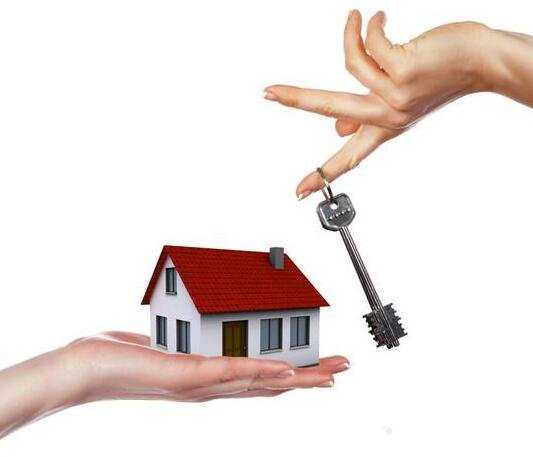

買好屋學問多 看房子30大招必看！

買房子是人生的大事，千萬不能衝動，一定要仔細觀察房子是否符合自己的需求。看房子等於是幫房子做體檢，房子的狀況會影響到居住的舒適度，許多人看屋只是看個意思，往往忽略掉該注意卻沒有注意到的細節，而這些細節卻會關係你未來的生活品質。如果看房子前作好功課，就不用怕被銷售人員牽著鼻子走。
買好屋學問多 看房子30大招必看！
看房子的學問很大，有的人看一棟房子要花幾個小時以上，有的人卻走馬看花只看兩眼就換下一個物件，這二者絕對「差很大」，看房子到底要看些什麼？看房子前又要先瞭解那幾件事？
1、看屋訣竅「由外而內」！ 房子是不是豪宅不重要，自己喜歡最要緊。基本上，在購屋前，你一定要勤快點，多看幾間、多跑幾趟，才能瞭解這棟房子在不同時間點呈現的真實屋況。看屋的訣竅在於「由遠而近，由外而內」，先看房子外在的四週環境，是否有暗巷形成治安死角？附近是否有市場、學區？是否有嫌惡設施？如果是預售屋，還要特別注意建商是否用「大帆布」或巨大的看板遮住周遭，如墓地、基地台等嫌惡設施。
2、消費者最在意「凶宅」！ 無論何種型態房產，看房子前第一步要做就是先上網查詢各種關鍵字，包括消費者最在意的「凶宅」，若靠山邊，也可查詢「土石流」，或輸入社區名稱，查看過去是否有事件發生。
當你走進公寓大廈前，要先看看房子的外觀建材好不好，有沒有瓷磚剝落或牆面污染，如果大樓的外牆都有水漬或者顏色會黑黑髒髒的，可見房子的防水處理不到位，可能每隔一段時間就得處理由外牆滲入的水氣，內牆也比較容易產生壁癌。
3、白天晚上都要再去看房！ 白天看房子主要是看房子附近的生活機能，晚上看房子則可觀察治安與寧靜程度，最好是白天及晚上都去多看幾次，晚上還要看住戶的「點燈率」，如果房子是中古屋而入住的戶數不多，要打聽是不是因房子有瑕疵才會造成住戶不多？在晚上看屋也容易發現屋內的隔音效果好不好，順便確認周遭是否會有擾人的噪音或無法忍受的狀況。
4、樓梯間上上下下走一回！ 看房子時不要都搭乘電梯，應該在樓梯間上上下下走一回，看有無堆積雜物，再去看「公佈欄」上關於住戶欠繳管理費的狀況如何，也可以詢問管理員，有沒有不好搞的鄰居，這些都攸關社區的品質。
5、房仲常將屋況吹噓多好！ 房仲帶看房屋時，常會將屋況吹噓的有多好，至於周邊設施往往都是口頭說說，不會帶你親自走一趟，許多房仲銷售的物件都會標榜離交通設施只要幾分鐘的距離，但每個人的腳程或開車速度都不同，甚至平日上下班時的交通流量也與假日不盡相同，與其相信房仲的話，不如靠自己走一趟，才能評估是否可以接受真正要花費的交通時間。
6、注意大樓「棟距」問題！ 不論是公寓或大樓的住宅，房子與房子間的棟距如果太窄，隔壁住戶的說話、洗澡、洗衣服的聲音都能聽得一清二楚，會造成很大的困擾，看屋時別忘了注意「棟距」的問題。
注意大樓「棟距」問題！

7、先看進入房子後的感覺！ 當你瞭解房子的週遭環境後，再進入看房子「屋內」的階段。第一眼先看進入房子後的感覺，如果第一印象不好就不用浪費時間，接著看格局和採光，看消防逃生等安全措施及路徑，再敲牆壁看建材與施工等細節。看房子要從務實的角度來看使用動線，回歸實際生活面的需要，才會買到好的房子。
8、潮濕漏水最常見的問題！ 台灣氣候潮濕，漏水可說是最常見的問題，漏水屋糾紛是購屋糾紛的榜首，房子一有漏水狀況往往讓人相當抓狂，你當然不可能每次看屋都遇到雨天，讓你查看房子有無漏水的情況，但是從一些房子的細節，多多少少能觀察到房子有沒有漏水，如果你想買的房子是屋齡較高的中古屋，最好是連續下雨二、三天後，再去看屋，就可以注意牆壁水氣油漆有沒有問題、有沒有霉味。
9、留意房子是否漏水問題！ 不只是中古屋會發生漏水問題，偷工減料的新成屋也常發生漏水的狀況，在看屋時，可特別注意客廳、廚房、廁所的牆壁及天花板，從牆壁接縫處、牆面與天花板的交界牆面是否平整，牆壁有無水氣或油漆是否平整、有無龜裂突起，都可判斷是否有漏水問題。
10、水壓馬達轟隆轟隆聲音！ 高樓層的住宅最怕水壓不夠，所以建商會在整棟高樓的中間樓層，加設「中繼水箱」，加裝加壓馬達及減壓設施，讓水壓能打上高樓層。如果看的房子剛好在這一層，就可能會聽見馬達轟隆轟隆的聲音，怕吵的人一定要問清楚中繼水箱在哪裡，以免買到鄰近那一層樓的房子。
看房子時對建材相關問題要開口問房仲，因為一般民眾看房子時不容易看出房子採用什麼建材，也沒辦法分辨氣密窗是採用單層的還是雙層的玻璃，或是隔間是用水泥磚牆，還是隔音不佳的「輕質灌漿牆」？如果房仲不願說明或是你都問不到，那這棟房子就會讓人擔憂。
11、樓層有沒有專用使用權！ 購買公寓大樓的房子時，一樓及最高樓層的總價會高於其他樓層。這是因為一樓及最高樓層的住戶通常可以有一樓空地及頂樓平台的使用權，作為加蓋或其他用途，然而也容易引發頂樓平台與一樓空地所有權與使用權的爭議。
事實上，頂樓平台及一樓空地為全體住戶共有，一樓住戶和頂樓住戶不能片面占用，如果你想買一樓或最高樓層的房子，看房子時要先問清楚有沒有「專用使用權」，全體住戶間是否訂定有分管契約，約定分管。
如果你想買二樓的房子，更要特別注意排水問題。通常公寓大樓的排水管線會在二樓交會再往下到一樓，因此如果水管不通，很有可能是在二樓回堵，造成二樓淹水問題。因此看屋時務必仔細試試看水管排水功能。
12、買預售屋及新成屋注意！ 買中古屋或新成屋，由於有現成的房子在那裡，看房子多看幾次就可看出房子的優點和缺點，如果你想買的是預售屋，房子還沒有蓋好，你沒辦法去看房子，這時候又該注意些什麼事？許多預售屋的基地與銷售中心不在同一個地方，銷售案現場的大型燈箱和海報總會秀出漂亮的綠地、明星學校、交通動線與公共設施，卻可能也隱瞞了基地旁有一座高壓電塔，隔壁有加油站的實情。
所以你想買預售屋，一定要到建案現場了解周遭環境，除了注意有無嫌惡設施，也要測量附近馬路車流量，看看是否會塞車？有沒有噪音？以及建案有沒有路沖或壁刀等風水問題。
建商推出預售屋建案時，廣告文宣時常標榜「坐擁萬頃樹海」、「環抱千坪蒼翠綠意」、或是「二十分鐘到台北信義計畫區」、「轉個彎就能到SOGO商圈」等文字，但那個「萬頃樹海」也許只有高樓層住戶才看得到，而二十分鐘到台北信義計畫區的建案可能位於汐止，而且還要在完全沒有紅燈的狀況下才可能做到。
13、建商老王賣瓜自賣自誇！ 不要完全相信建商的廣告，你一定聽過「老王賣瓜，自賣自誇」這句話，建商的廣告說明書也是如此，在玩弄文字遊戲，建案說明書通常都會有壯闊的照片或美麗的3D圖，再搭配充滿詩意的文字，讓人看了心動，但建案現場環境旁邊可能是違建、基地的道路窄小、公共空間擁擠，根本不像說明書寫的那樣好。
廣告說明書中的「鳥語花香」、「幽靜雅居」，建案可能位於偏僻的山坡地；挑高四米五的「機能小豪宅」也可能是位於工業區的住宅，這些廣告文字都需實際查證，不能單看說明書就貿然決定購買。
在預售屋建案接待中心可向銷售人員索取銷售平面圖、家具配置圖，並確認房子的面向，避免西曬或東曬；同時，可一邊看平面圖一邊對照格局，隨時詢問銷售人員。
14、配置圖不會放上比例尺！ 一般家具配置圖不會放上比例尺，實際空間可能與一般家具尺寸根本不成比例，而會有客廳狹小到放不下沙發、淋浴間窄到無法轉身、兩房門對開會相撞、床鋪旁邊剛好是水管等的狀況，你可以請專業人士幫忙看圖分析，才不會忽略這些潛在的問題。
想買預售屋，一定要詢問建照是否已取得，可調閱土地謄本了解土地產權，尤其在「文林苑」事件後，很多民眾才發現取得建照的建案，不一定產權清楚，也許有遭鄰房佔用，或多名地主合建產權複雜等問題。
15、樣品屋總是中看不中用！ 消費者在購買預售屋時，大多數都會去看樣品屋，以便了解自己將購買的房屋產品，但要切記，樣品屋的格局規劃往往只求中看並不中用，與自己即將購買的房屋產品是不一樣的。建商的樣品屋為突顯空間的流暢性與開闊性，樣品屋本身樑柱小，木製的壁面要比磚牆或水泥牆薄，所以，看起來會比將來完工的房屋來得大。而且有些樣品屋從玄關、室內及主臥室內的衛浴設備，都是不作房門，玄關還特別寬敞，創造比實際更大的空間感。
不要誤把「樣品屋」當成將來完工的房屋，要仔細觀察樣品屋內的「陷阱」，例如樑柱位置、隔間牆壁實際厚度、室內實際高度等等，在看樣品屋過程中，最好詳問銷售人員各項細節，以避免造成交屋後各項糾紛的發生。
買房子最重要的是確認你的需求，到底你要找的是那一種房子，你才不會像無頭蒼蠅一樣到處找也找不到。看房子的重點則是自己要喜歡，要能滿足實際生活面的需要，看屋時做筆記，把所有好與不好都條列式記錄下來，才能清楚比較，如果看了不喜歡，房子再便宜也不要買。 買屋如何議價？看屋有哪些技巧？【4個常見問題】
16、購屋議價，空間有多少？ 買房子最怕買貴，可是要怎麼議價又是一門學問。住商不動產企研室主任徐佳馨分析，一般的議價空間大概是一成左右，也就是開價的九折。例如屋主開價1600萬元，大概可以從1440萬元開始議價，成交價可能可以落在1500萬元左右。
議價前依舊是「多看多比較」，一般人決定要買房時，雖然已經有區域、預算、類型等已經規劃好的想法，不過很多事情仍然是「眼見為憑」，多看、多比較，掌握房市最新動態、增加自己的看屋知識與常識，買房才能掌握價格，一出手便成功。
17、與房仲培養良好的關係！ 與房仲培養良好的關係，就是成功買房的第一步。不少剛開始接觸買房資訊的年輕人，常常會畏懼與房仲培養良好的關係，深怕被房仲糾纏或是一直被推銷。但其實房仲才是第一手資訊來源，且各大品牌房仲都有良好的基本訓練，只要與房仲有適當的溝通，議價時房仲比較容易站在買方的角度，協助幫忙跟賣方議價。
不少大型房仲網站都有各區域的物件資料，隨時可以點選地圖找到自己想要的區域，查詢確定的「成交行情」，也方便議價。內政部營建署也推出「不動產價格e點通」網站(etp.cpami.gov.tw/)，可以查詢各路段成交行情。另外可以上網多和網友討論「買房經」，參考網友買房的議價實戰經驗。
18、投資客拋售議價多兩成！ 徐佳馨分析，無論市場好壞，總是有人可以買屋買到最好的時機、最好的價格。只要把握時機，議價空間都會不少。像是掌握「投資客拋售」的時機點，議價空間通常都會比較大，相較於台北市中心房屋「難能可貴」，新北市不少重劃區面臨投資客拋售的危機，尤其是近幾年才成形的重劃區，因為新成屋戶數多、供給量大，急著用錢的投資客較容易議價、議價空間也大。
另外可以掌握房市利空的時機點，像是歐債風暴、奢侈稅、景氣衰退等時間點出門買屋議價，通常也會獲得不錯的價格。如果真的遇到屋主急著賣屋，尤其是因為怕被課稅，或是資金週轉不靈的投資客，相對的也比較容易議價，議價空間可能可以拉高到二成。
19、嫌惡房屋可多殺價兩成！ 議價時記得多嫌棄對方的房屋，例如碰到頂樓或二樓的房子，就可以抱怨頂樓容易漏水、二樓容易水管堵塞。風水特別不好的房屋也是比較容易砍低價格的物件，像是門口有明顯的路衝，或是窗戶打開有福地、電塔等嫌惡設施，房價通常會再低二成至三成。雖然風水不佳，可是對有些無宗教信仰，或是比較不相信風水的人來說，也是撿便宜的好機會；看屋時不斷挑對方房屋的毛病，容易議價。
20、租屋與購屋個別優缺點？ 台北市房價節節高升，尤其是市中心的大安區、信義區、中正區，新成屋幾乎都破百萬元，中古屋也要七十萬元以上，非一般年輕家庭能夠負擔。徐佳馨分析，相較於高漲的房價，台北市的租金相對便宜。
舉例來說，台北市信義區一間室內不到10坪大的套房，可能房屋總價就要1200萬元，可是租金最貴也僅需2萬元，租金的投資報酬率2%；如果用租金直接換算，也就是說至少租50年才買得起這間房屋。
假設直接計算買下該房屋的價格，以自備款存到3成來看，至少要貸款840萬元，以年利率2%、貸款30年計算，每個月至少要負擔房貸31048元。租屋比買屋，每個月至少可以省下1萬元以上。
21、房價高租待存錢等房降！ 在台北市中心租屋確實比買屋划算。徐佳馨分析，不少年輕人在還沒存到自備款前，可以先「以租代買」，可以慢慢存錢、累積財富，還可以不斷的更換新房屋，住在不同的房子裡，又不用繳交有關房屋的任何稅金，比較符合時下年輕人的生活需求。
而且如果想省下租金，甚至可以選擇與朋友合租整層住宅，比起單獨租套房划算。例如同樣是台北市信義區的房屋，如果選擇靠近吳興街或是永吉路的巷弄，與另外2個朋友合租30坪老公寓，總租金約2.4萬元，三個人分攤，每個人只需付出8000元的租金，比住在小套房，省了超過一半的租金。
不過租屋無法擁有自己的房屋，而且隨時有可能會面臨被房東趕走、房屋被賣掉的可能性，另外如果遇到惡房東，不僅住得不愉快，可能還得面臨後續法律控訴等問題，也會造成生活上的不便。而且租屋不能隨意更改室內裝潢，對於居住品質較有要求的人來說，相當痛苦。
22、單身女生買房需要注意？ 近年來女性經濟獨立、自主，不少女性更能在投資置產上取得主導權，尤其是近年未婚或不婚的女性比例越來越高，單身女性買屋成了市場的趨勢。徐佳馨分析，女性購屋者其實多半喜歡住在市中心，尤其最好附近有百貨公司、捷運站，而且離工作的地點近、交通方便。
單身女生買房需要注意
雖然單身女性條件好，不過多半希望每個月的房貸不要超過薪水的三分之一。單身女性又喜歡住在市中心，因此購屋多半會以市中心小套房為主。買屋時得特別注意，小套房通常貸款成數不會太高，一般房屋可以貸款到7成左右，但是小套房卻只能貸款5~6成，因此自備款準備可能要更充裕。
另外不少小套房會有管理雜亂等問題，或是因為戶數太多，居住品質不如其他住宅。因此女性買屋時，如果買小套房，務必要在各種時段前往看屋，檢查其他住戶的水準與品質，另外要仔細觀察物業管理公司的服務態度，通常物管好、大樓的管理也會較完備，如果物管不好，大樓也較容易出現問題。
23、看屋時要有哪些小撇步？ 其實看屋時就可以觀察到不少房屋的小細節，因此買屋前務必要好好看屋、檢查屋況，以免被黑心投資客的裝潢欺騙，而付了冤枉錢。《黑心建商的告白》作者
Sway建議，看屋時最好隨身攜帶小工具，可以隨時測量和註記。舉例來說，像是捲尺、相機、奇異筆、原子筆、有色膠帶、小夜燈和乒乓球，都是很好的工具。
24、筆敲地檢查地磚黏合度！ Sway表示，看屋時要先了解地板平不平，消費者可以挑選同一房間中不同的五個點，用奇異筆敲地磚，聽聽看聲音是否一致，測試地磚或地板是否貼合，會不會有很大聲的回音或是空心的聲音，有異狀就要隨時拿有色膠帶註記。
25、乒乓球檢查地板平穩度！ 另外，可以把乒乓球放在地板上，看看在無外力的狀況下，是否會固定向某方向滾動，確認地面平整度。
26、小夜燈看插座有沒有電！ 接著檢查機電設備的功能，此時小夜燈就派上用場了，房屋內每一個插座都可以利用小夜燈試試看是否供電正常，避免投資客裝潢得美輪美奐，但其實室內都是假插座，未來入住根本不能用。
27、檢查水槽排水的順暢度！ 另外買屋最怕漏水，還有水電管線不良，造成需要重新施工。Sway建議，可以將屋內每個水槽都裝滿水，再同時把水流掉，看大量排水是否順暢；洗臉台下方、廚具下方檢查有沒有漏水的痕跡。
28、查窗框天花板漏水痕跡！ 另外窗戶邊緣、牆壁、天花板也是要檢查的地方。不少投資客為了掩飾漏水的痕跡，故意用些木板裝潢遮掩水痕，因此如果能夠掀起來看，就務必掀起來看看裡面的狀況，如果有認識的水電專家、設計師，也可以直接帶到現場一起看屋檢查。
29、 檢查公設是否保持整齊！ 看屋時也別忘了公共設施、停車位和鄰居狀況。檢查看看走道、樓梯間是否維持明亮，如果鄰居鞋子亂丟、都是垃圾，可能代表社區管理不佳，未來入住會有不少麻煩。也可以向鄰居打聽該社區、公寓的居住品質，確認環境狀況。
30、房屋周圍查看嫌惡設施！ 最後要記得檢查大樓外觀是否有龜裂，看看附近是否有嫌惡設施，像是電塔、陰宅、廟宇等，如果有避諱則盡量不考慮這類房屋，也記得要求仲介提出「非海砂屋、凶宅」等證明，保障自身的權益。
50歲前別急著買房
人類到我們這代，真是以前所未有的速度在進步著，不但上了「雲端」，更登陸了火星！但還是有不少老觀念像是烙印在我們的DNA裡。有些傳統價值還不錯，但是「追求學歷」和「買房子」這兩項我就持保留態度，尤其是後者。我懷疑，現代人很多的不快樂便是根源於對這兩者的「執念」，我相信這個心結一解，眼前多半能豁然開朗！
在你贊同或是反對這篇文章前，我想先澄清一下，我可不是一味地反對買房喔！純粹只是看到一些「衝動購物」者（其中大半是年輕上班族）為了買房而犧牲了生命中不少的美好而感到可惜。更何況這幾年布媽常催我買房，但每次在我長篇大論地演說後，她總是一臉困惑地走開，然後沒幾天又來催我一次，實在很沒力。幸好我有寫部落格，老媽聽不懂（或不認同）的，我還可以來這裡抒發一下。
簡單地說，我認為現在這個多變的時代，自有住宅的必要性被嚴重高估了！
當然啦，你要是符合以下任何一種情況，這篇可以跳過了。因為如果我是你，我一定也會買房子：
手上閒錢夠多，有能力以現金購屋的人。（請務必來網聚讓大家認識認識！）
目前工作非常穩定（如軍公教），未來也不打算換跑道，且房貸負擔不超過可支配所得的1/3者。
對於上述兩種人而言，買一戶屬於自己的房子，多半是利多於弊的。但是對於其他族群來說，我勸諸位一定要冷靜思考。你可以一窩蜂去買團購美食，可以跟風去買最新手機，但只因為「大家都這麼做」，或者聽信一些似是而非的觀念，就背上20年的房貸，那也實在玩太大了。
以下是常見買房子的理由，每一個表面上都是對的，但都有背後的前提假設或時空條件。畢竟房子是很貴的東西，想清楚再下手，千萬別衝動啊！
迷思一：擁有自己的房子才有安定感
基本上這是沒錯，擁有自己的房子不必看房東臉色，可以隨心所欲地裝潢，享有一切的自主權。但我想說的是，這種踏實安穩的感覺並非無價，而是非常非常昂貴的（至少在台北），簡單地計算一下你會嚇到的：
就拿一戶1000萬的住宅來舉例好了，假設頭款300萬，跟銀行貸款700萬，以年利率2.5%貸20年，平均每個月的本息攤還約3.7萬元。如果同樣的房子用租的，以我居住的新店地區為例，租金僅約1.5萬元，等於這20年間，住在同樣的房子裡，買的人要比租的人多花費：（3.7萬-1.5萬）（12個月）（20年）+300萬頭款 = 828萬！換句話說，租房子的人在這段期間內，雖然可能冒著被迫搬家的風險，也無法任意在牆壁上釘釘子，或更換地板的顏色，但是會有828萬的差額可供利用。而買下房子自住的人等於多付出了828萬的「安定感貼水」，但實質上也只住在一樣的房子裡。
這「安定感貼水」值不值得呢？當然是見仁見智。如果心理明白這個成本，但仍覺得要擁有自己的房子，那至少當事人知道自己在做什麼，但如果只聽到「租不如買」這類直白的建商口號，或是看到同儕都買了房子，就因此撂落去，真的就讓人捏把冷汗了。
另外我們也該想想，一般上班族光是付個頭款可能就把多年積蓄消耗殆盡，每個月除非薪水超過10萬以上，不然每個月的本息攤還也是可觀的壓力，萬一遇到景氣不好，工作出了問題，很容易就陷入腹背受敵，走頭無路的困境，擁有房子的「安定感」還剩下多少令人存疑。
迷思二：有土斯有財，買房子同時也是投資
到底是有土斯有財，還是「有財斯有土」呢？這是個很耐人尋味的問題！古人會有這句話，是因為土地在農業社會是主要的生產資本，頭戴瓜皮帽的員外們把土地租給佃農耕種並收取地租，就像現在的收租公收租婆一樣，這確實是個好投資，但前提是，員外跟收租婆自己都已經有房子住了，土地（或房屋）對他們而言，純粹是個生財工具，而非庇護所，這是和一般人不同的地方。
或許你會說，將來我把房子賣掉可以賺取上漲的差價。好吧，姑且不論房子也有折舊或是跌價的風險，就算你的房子真的在幾年內暴漲了一倍，你把它出售大賺了一筆，接下來你和你的家人要住哪？如果你想住在同樣的地段，因為所有的房子都上漲了，所以理論上你還是只能買到類似的房子，那一開始又何必賣呢？所以你剩下的選擇只有下兩個：
一是去偏遠地段買便宜房子，手上可以握有盈餘，但這是你犧牲生活的便利性和熟悉環境所換取的，很難算是投資上的獲利。二是賣掉房子後，在原地段租屋，這樣在我看來也不盡合理，若一開始就用租的，並且好好理財，說不定現在手上閒錢更多。
乍看之下，房價上漲會帶來利潤，似乎是個好投資，但請別忘了，靠房地產投資致富的人不會只有自己住的那一間房子。
迷思三：房子是資產，付出的房貸終究是自己的
在會計學上，房子確實是資產沒錯，但在心理學上，房子絕對是負債。
關鍵就在於，你的資產（自住的房子）直到你賣掉的那天為止，都不會為你帶來任何收益。但你欠銀行的貸款，卻是毫不客氣地每個月吃掉你一大半收入，並持續數十年，你看野原廣志（蠟筆小新的爹）的苦臉就知道了，絕對是負債的啦！
當然啦，背債某種程度也算是強迫儲蓄，有激發人類潛能的效果。藝人周思潔因為事業失利，背負可觀的債務卻成功走出事業第二春，成為優秀的講師。但我想說的是，真想強迫儲蓄，其實有不少的理財工具可以達成，像是零存整付或是購買保本商品等，這些資產的流動性都比房子好太多。若是想激發自己的潛能，我認為多生幾個小孩效果可能更顯著！
迷思四：買戶房子當房東，租金會自己養房子（付貸款）
我第一次知道這個概念是在「富爸爸窮爸爸」這本書裡。作者提到，如果有能力付出自備款，就可以買間房子然後租出去，因為租金收益會高於房貸支出，所以就會產生正向的現金流，成為所謂的被動收入。當時我對這個概念興奮不已，可是稍稍作點功課就發現，這樣「租金高於房貸」的現況在台灣是極端罕見的，僅有少數幾種狀況有機會靠出租房子賺到所謂的被動收入：
房子是現金買的，貸款很少或根本不貸，租金收益算起來有可能比定存要高；
租黃金店面
將住宅重新裝潢，切分成許多小單位，分租給上班族或學生
即使如此，也得確保出租率夠高才行。台灣的房市是個高效率市場，也就是說大家都玩得很精了，類似逢甲商圈這種出租率超高的地方，劉媽媽這樣的炒手早就布局了。假設你是個上班族，要玩這樣的遊戲還是想清楚比較好。
但富爸爸難道是鬼扯嗎？其實不是，至少在美國，這種「被動收入」是真的賺得到的。我們都知道美國人不太儲蓄，有意願存一大筆自備款的人不多，而且在置產觀念上不像華人這麼有執念，一般說來，他們的租金確實超過房貸不少，只要手上有自備款，買戶好的物件然後出租，確實是個不錯的投資。
迷思五：居住的權益 = 買自己的房子
看完上面四個迷思，你可能會想，那我們小老百姓怎麼辦，我們也有居住的權益啊！
說到「住的權益」，電視上整天都有名嘴砲轟政府，罵多了確實可以解決問題，不過應該解決的是名嘴自己的房貸問題，罵一罵發洩可以，而這畢竟不是出路。期待政府會打房，讓台北市房價回到大家買得起的水準（好比20萬一坪）？你覺得有可能嗎？真變成那樣我可能還不敢買哩，要準備要移民了說！
其實放眼全球的大都會，都跟台北市有一樣的問題，甚至更加嚴重。就以我比較熟悉的紐約來說，我的同事多半薪水不低，甚至包括在華爾街上班的朋友在內，幾乎沒有一個考慮買紐約市區的房子來自住，不光是買不起，也根本不值得，因為硬著頭皮買下來會嚴重降低生活品質。在大都會區的上班族想要通勤方便，便租個市區的房子，著重生活品質的，則去郊區買屋，我認為這會成為全球大都市生活的常態。堅持要在都會區買自己的房子才算是擁有「居住權益」的人，不能說你不對，只不過這樣的重擔可能讓你感到非常辛苦與挫折。
以上五個迷思，你可能認同，也可能不認同，但這不打緊，重要的是有沒有在買屋前想過一輪，並得到一個屬於自己的答案。同樣的，不管你是迫於無奈或出於自由意志，租屋所帶來的正面價值也同樣該想過一輪，接下來我想談談「只租不買」在現在這個環境下所帶來的利多！
價值一：帶來自由度
房子是「不動產」，一旦買了房子人往往就「動不了」。我認為現在的上班族最好別期待一輩子都可以待在台灣工作，想要更高的薪資，更好的發展，往大陸或其他國家走是必須考慮的選項。想想看10年前你周圍有多少人在海外工作，現在這個數字又是多少？那未來10年呢？有了房子當然還是可以接受海外派駐，但屆時問題會複雜許多。
就算只考慮台灣本島，如果薪資的大半都來付房貸，你的職場自由度也會大減。受制於房貸壓力，你在職場的談判籌碼低了，你可能不得不忍受機車的老闆，或是不喜歡的工作與職位，甚至得放棄不少潛在的機會。尤其對於30歲上下的職場關鍵期，太早因為要供養房子，而放棄未來的可能性，我覺得是很可惜的。
價值二：有效降低風險
很多人把房子想成一個永久性資產，不但不會損壞，而且還會增值，但事實真是如此嗎？很遺憾的我必須說，全球氣候變遷對人類建築的損害是很驚人的。這幾年地震頻繁，暴雨連連，上個月幾次地震，我發現牆壁上多了不少裂縫，房客我只要確認不影響安全就好，但我房東要傷腦筋的可就多了。朋友的社區頂樓漏水，每戶要分擔上萬元的修理費，如果你只是租屋，就可以避開這些惱人又花錢的問題，但如果你是屋主，難免會傷心、傷神、還有傷荷包了。
除了財產風險，居住環境的風險也要考慮。就算買屋前再怎麼研究，也不能100%保證周遭環境是完美的。像是惡鄰居或是地下工廠之類的問題，對於租屋者來說，即使不幸碰到了，大不了搬走，風險的影響有限，但對屋主來說，很容易就變成一個棘手的問題。
價值三：延遲享受的力量
心理學家的研究告訴我們，當人們在追尋一項事物時，幸福感會隨著成功的逼近而逐漸升溫，當真正追到手時，幸福感達到頂峰，但隨即開始反轉向下。所以不論是追逐愛情，追逐金錢或是名利，最耐人尋味的一段歷程其實是即將追到卻還沒追到的這一段，如果一個人常常處於這樣的歷程，我相信他的情緒與動力都是最佳的狀況。
這也就是為什麼我會呼籲年輕人不要太急著買房子，先把買房子當成生涯目標就好。太早擁有自己的房子，除了可能帶來財務上的壓力外，也可能喪失上進的動力。在人生中插上一支標竿來追尋，說不定反倒會更快樂、更來勁。
價值四：金錢運用更靈活
「設備租賃」是個蓬勃的產業。越來越多企業需要某項設備時，會傾向租用而不是買斷，小從影印機、公務車，大到生產設備甚至波音747，目的就是希望讓金錢的使用更靈活，可以投入在更有價值的專案上。買房子對一般人來說最大的問題，就是限制了金錢的使用自由。雖然房子漲價後出售可以獲利，但真要賺到差價往往是多年之後的事。心理學家也告訴我們，人往往會把未來可能的收益看的很大，而把當下擁有的價值看的比較小，這就是大家明知道樂透每注期望值極低，但還是會賭上一把的心態。
但事實上，把時間成本考量進去，現在手上的1萬元是絕對要比20年後的1萬元更有價值的。
人生中很多事情只有一次，過了就再也不會回來，就像小孩子的教育，還有陪伴父母的機會。勉強購屋某種程度就是把小孩子的教育經費、家人的旅遊經費、娛樂經費等等投注在房子上，就算多年後手上有了錢，能花錢的機會卻已過去，這不是很遺憾嗎？
價值五：精簡輕盈的生活
搬過家的人都會很驚訝，自己到底是怎麼累積了這麼多東西的！當年從台灣搬去美國時，我有好幾個大紙箱到了第二年才拆封。其實我們都高估了自己生活所需要的物品，絕大多數的採購，都是「想要」而不是「需要」！雖然我沒有證據，但我相信擁有自己的房子後，人們會想花更多的錢來採買物品妝點它，原本夠大房子在幾年之後就開始嫌小了。
如果你是租房子的人，較會有足夠的動機來遏止你亂花錢的衝動，尤其是大型家具、家電、或不必要的裝潢。反正包括房子在內都是身外之物，會讓人的心思更容易回歸到生活的本質而非物質。
曾經看過一段描寫「催眠」的文章，印象很深刻。催眠大師將自願者催眠後，在耳邊給他指令：等會你醒來後，你會脫去身上外套。當你聽到我說「謝謝請回座」，你會把圍巾圍上，好，現在你清醒了！這位自願者果然把外套脫掉，大師問他，為什麼你要脫外套？自願者回答：因為我覺得很熱！接下來大師說：謝謝請回座。自願者果然回座並且把圍巾圍上。大師又問他：既然覺得熱為什麼又要圍圍巾呢？自願者回答：我懶得拿圍巾，乾脆圍在脖子上。
「買房子」這件事，某種程度就是一種「群體催眠」。我們每個人都以為買屋是出於自由意志，也說得出看似正確的理由（前述的五項迷思），加上周圍多數人都這麼做，總不會有錯吧？但我們也有可能是受到文化、媒體、甚至建商的心理暗示，掉入心理學家所說的群體盲從（Social Compliance）陷阱而不自知。
總結一句話，如果你是個暫時無力買屋，卻因此苦惱甚至憤憤不平的人，建議你一定要換個角度思考。房子原本就是「奢侈品」而非「必需品」。把它當成一個美麗的目標來追尋，年輕時努力工作，年長時若錢賺得夠多就盡量用現金買吧！當做多年來辛苦的慰勞品。否則，以通勤便利為考量租個房子，在財務自由、職場發展、以及生活品質的綜效上，我認為會是相對理性的策略。
當無殼蝸牛實在不需要委屈，也沒啥好氣憤的，因為背著重殼的蝸牛搞不好更累。不過話說回來，當個枝頭上的黃鸝鳥豈不更輕鬆愜意！